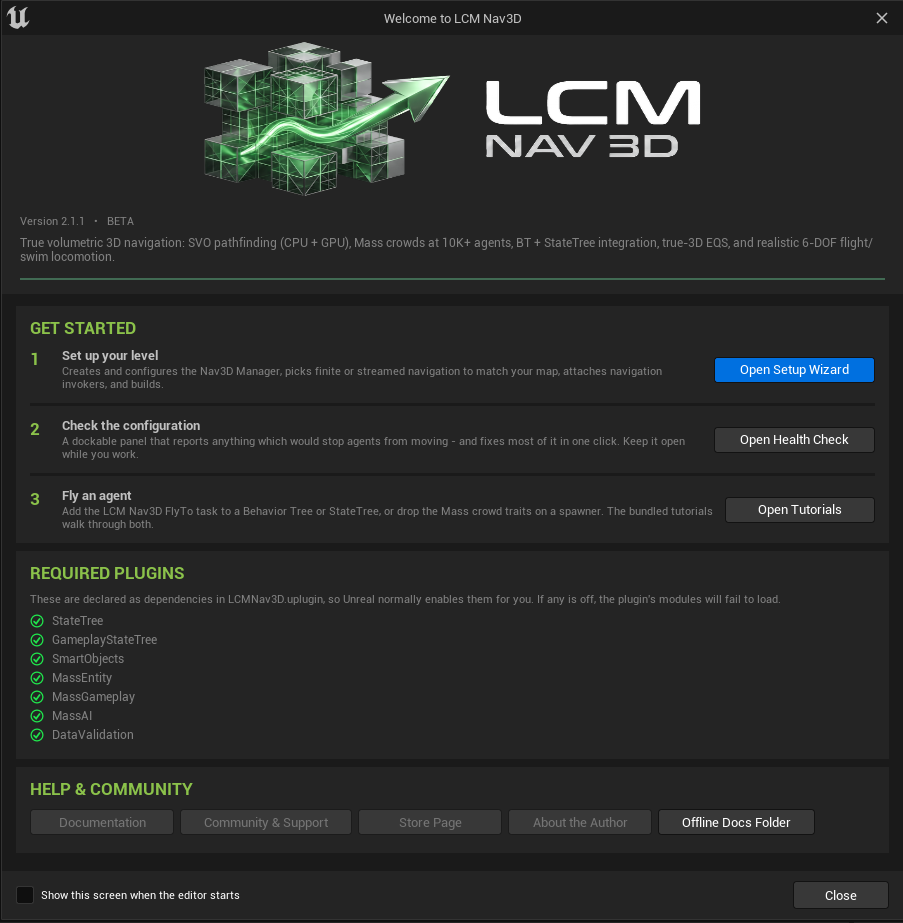
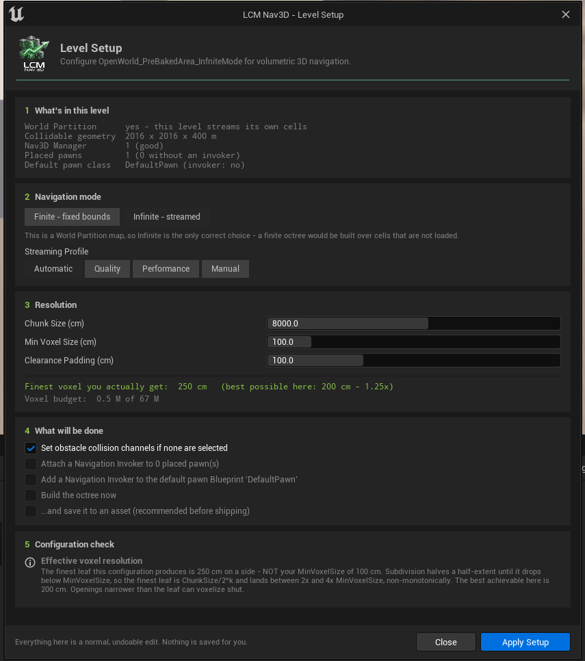
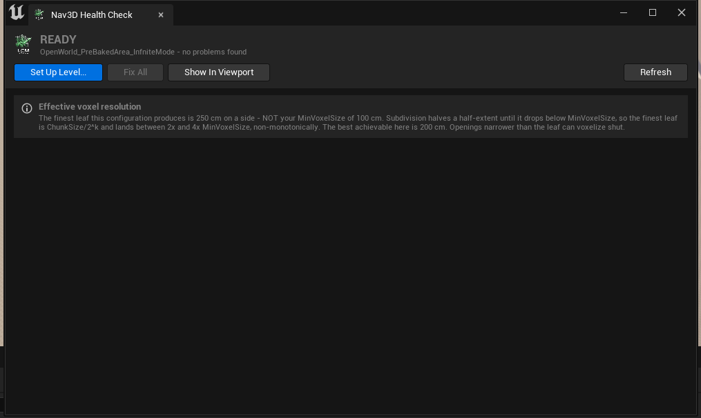
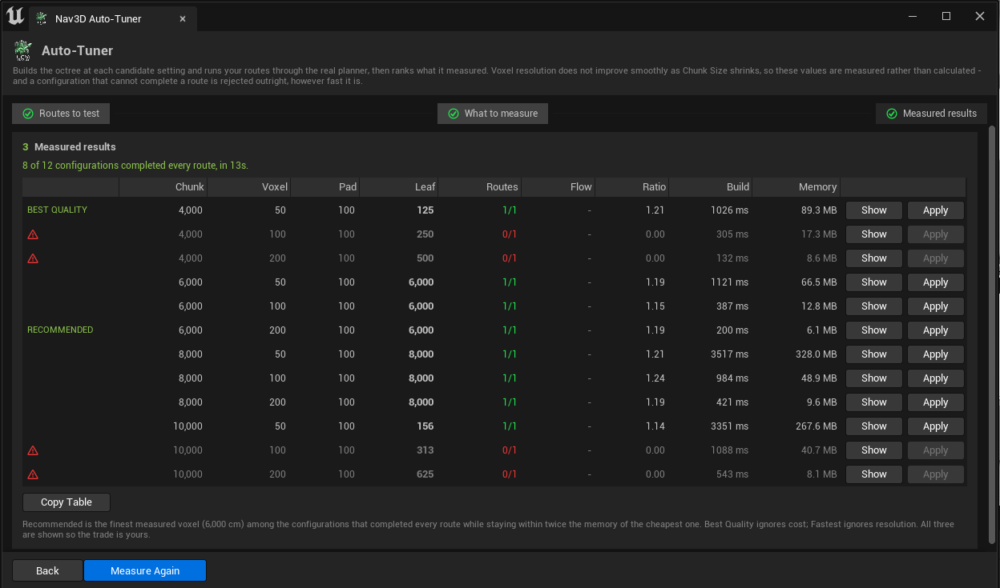
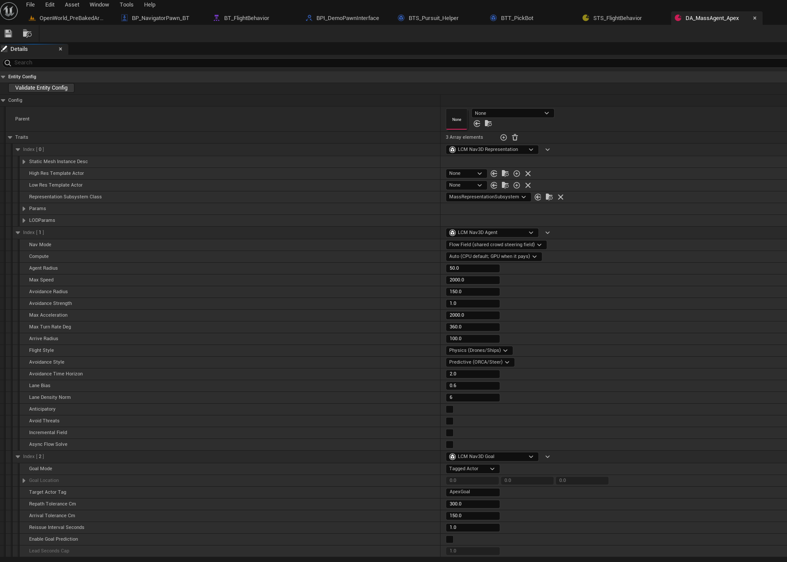

LCM Nav3D: Documentation

Stuck, or want to talk to the author? → Discord: discord.gg/nXkpD6uaBG. Verify your purchase in
#get-helpfor direct support, bug tracking and early builds. More UEDEV plugins and resources: uedevlabs.github.io. Everything on this site is also available as PDFs — the full manual and the quick start — for reading away from the editor.
Built for production
LCM Nav3D is a heavily optimised, production-grade navigation system built for AAA-scale Unreal Engine projects. It ships complete C++ source, is fully exposed to Blueprint, and is engineered so that the expensive parts stay off your frame budget. The specifics:
| Engineered for | How |
|---|---|
| GPU acceleration | GPU voxelization and GPU 6-DOF compute, with automatic CPU fallback when no GPU is present - so it degrades gracefully instead of failing |
| Crowd scale | 10,000+ agents through the Mass Entity ECS with LOD-culled rendering, where a UActor AI agent costs roughly 50 µs/tick once it has a controller, movement component and behaviour tree |
| Off the game thread | Asynchronous pathfinding throughout, with a callback on completion rather than a blocking query |
| Frame budget | Explicit frame-budget controls, and dynamic-obstacle updates coalesce dirty
regions into a single window (r.LcmNav.DynObs.CoalesceMs, default
33 ms) instead of restamping per event |
| Memory | A sparse octree, so cost is driven by how cluttered your level is rather than how large it is - open sky is nearly free |
| Determinism | Same input, same output, every time - which is what makes replays, lockstep multiplayer and automated tests reproducible |
| Large worlds | World Partition and streaming support, with a bake path and a coarse skeleton for long-range routing before the detail exists |
| Not a black box | A health check that reports anything that would stop agents moving, an auto-tuner that measures candidate voxel settings against your real routes, and a Gameplay Debugger category costing roughly 10 µs |
Supported on Unreal Engine 5.2 to 5.8, Windows 64-bit and Linux. Every claim above is documented in the chapter it belongs to - start with Core Concepts, or see Nav3D vs Recast if you are deciding whether you need volumetric navigation at all.
Start here
→ LCM_Nav3D_QuickStart.pdf - 13 pages. Install it, understand the five settings that matter, and have a pawn flying through 3D space in your own level. About forty-five minutes end to end. This is the only document most people need to read from front to back.
Everything else is there for when you need it:
| If you want to... | Open | Size |
|---|---|---|
| Get running | LCM_Nav3D_QuickStart.pdf | 13 pp |
| Read up on one topic | The chapter pages in the sidebar - one page per document | 1-18 pp each |
| Look something up | LCM_Nav3D_Manual.pdf - everything, bookmarked and searchable | 127 pp |
Every page on this site and every PDF is generated from the same source, so they cannot disagree with each other.
The editor tools, at a glance
Everything below lives behind the Nav3D button in the Level Editor toolbar. If you are looking for a specific panel, this is the fastest way to find which document covers it.
| Panel | What it is for | Documented in | |
|---|---|---|---|
 |
Setup Wizard | Configure a level from nothing, in one page | Editor Tools |
 |
Health Check | Anything that would stop agents moving, with a Fix button per row | Editor Tools |
 |
Auto-Tuner | Measure candidate voxel settings against your real routes and rank them | Editor Tools |
 |
Manager panel | Every navigation setting, plus what those settings resolve to | Settings Reference |
Building an agent
| Approach | Best for | Tutorial | |
|---|---|---|---|
 |
Behavior Tree | Most projects. The familiar route. | 03: Your First Flying Agent |
 |
StateTree | State-driven behaviour, data binding instead of a blackboard | 04: The Same Agent in StateTree |
 |
Mass Entity | 10,000+ agents through the ECS | 06: Mass Entity Crowds |
 |
Tactical EQS | Queries that score real volume, not a floor plane | 07: Tactical EQS in True 3D |
Part I: Getting Started
| # | Document | What it covers |
|---|---|---|
| 01 | Installation | Getting the plugin into your project and proving the install is good |
| 02 | Core Concepts | What the navigation manager does, and the settings that decide whether it works well |
| 03 | Your First Flying Agent | A pawn that flies through 3D space to a goal, in your own level |
| 04 | The Same Agent in StateTree | The StateTree route to identical flight behaviour |
| 05 | Dynamic Obstacles | Making the world move underneath your agents |
Part II: Going Further
| # | Document | What it covers |
|---|---|---|
| 06 | Mass Entity Crowds | 10,000+ agents pathfound through the Mass ECS |
| 07 | Tactical EQS in True 3D | Environment queries that score real volume, not a floor plane |
| 08 | AI Perception | Stock UE perception wired into volumetric threat tracking and cover |
| 09 | Hybrid Recast + LCM Nav3D | Walking agents on Recast and flying agents on the SVO, in one level |
| 10 | Nav Links and Area Modifiers | Traversal shortcuts, and regions agents should avoid or prefer |
| 11 | The Gameplay Debugger | Reading agent and plugin state live in PIE |
Chapter 12: Behaviour Tree stock patterns
Seven jobs the engine already does well, and where an LCM Nav3D node earns its place instead:
| # | Document |
|---|---|
| 1 | Wait |
| 2 | IsAtLocation |
| 3 | LookAt |
| 4 | TurnInPlace |
| 5 | HealthBelow |
| 6 | PerceptionRelay |
| 7 | MemoryDecay |
Part III: Reference
| # | Document | What it covers |
|---|---|---|
| 13 | Settings Reference | Every field on the navigation manager, with verified defaults and limits |
| 14 | Troubleshooting | Problems in the order people actually hit them |
| 15 | Flight and Swim Locomotion | The 6-DOF dynamics layer that turns guidance into believable movement |
| 16 | Mass Trait Reference | Every Mass Entity trait, and the one rule you must not break |
Part IV: Appendix
| # | Document | What it covers |
|---|---|---|
| 17 | API Reference | Everything you can reach from Blueprint, the Details panel, a Behaviour Tree, a StateTree or a Mass config |
Demo maps
The worked examples referred to throughout live in the plugin's
Content/Demo/ folder, grouped by Behaviour Tree, StateTree
and Mass Entity. Content/Demo/MainMenu is a gallery that
opens any of them. Enable Show Plugin Content in the
Content Browser to see them.